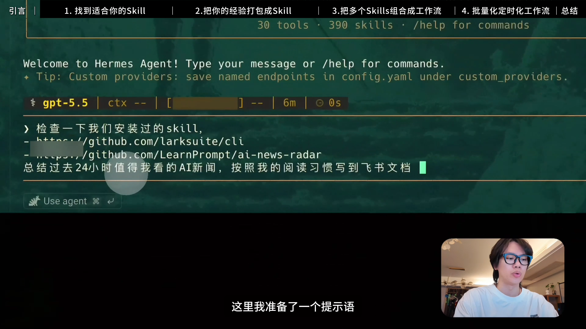
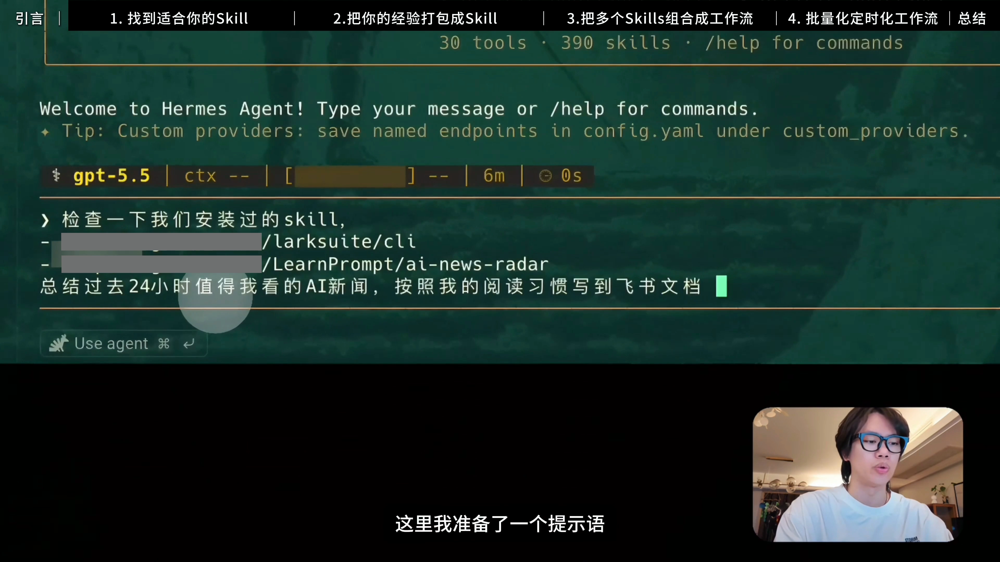
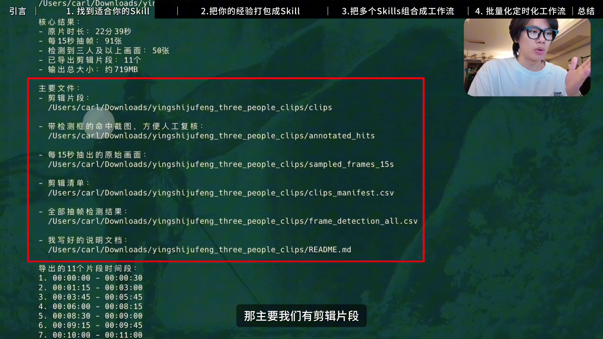
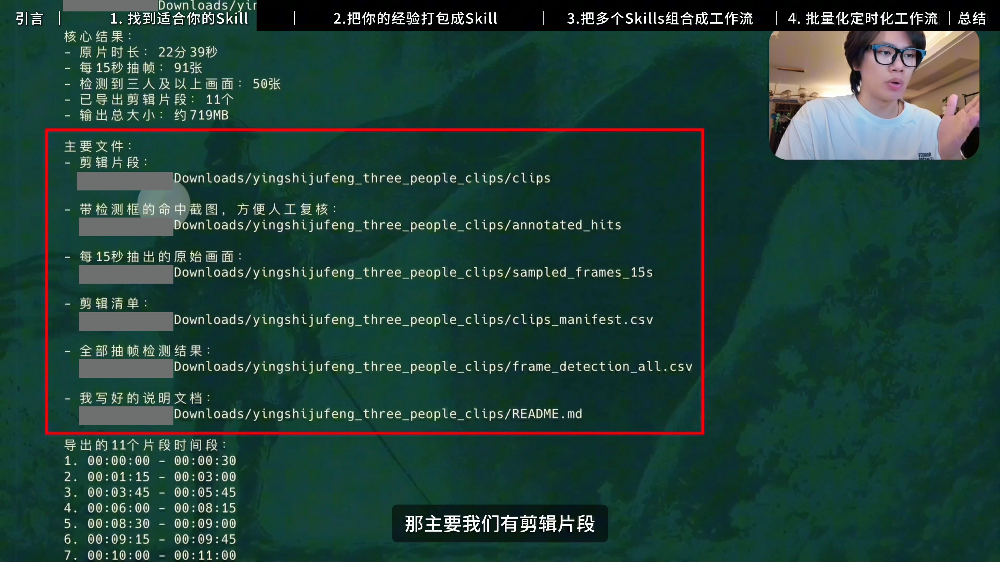

01:02 · 学会怎么找到它
留下作者与 Skill 名字


BEFOREAFTER源帧 1860 · 62.000s · 完整 3840×2160 画面，同帧同比例；默认显示 AFTER
06:39 · 影视飓风剪辑工作流中的 Skill
缩放之后，仍然看得清用途
源帧 11970 · 399.000s · 完整 3840×2160 画面，同帧同比例；默认显示 AFTER
09:00 · 观众继续跟着做
文件名留下，个人前缀收起


BEFOREAFTER源帧 16200 · 540.000s · 完整 3840×2160 画面，同帧同比例；默认显示 AFTER